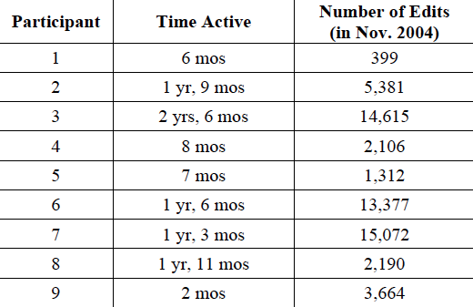

Key observation:
Wikipedia is an unprecedented success
in productive online collaboration.
Key question:
What sort of community and technological infrastructure supports this seamless collaboration of millions?
Specifically, how do users become active members of this community?
Becoming Wikipedian: Transformation of Participation in a Collaborative Online Encyclopedia
Susan L. Bryant, Andrea Forte, Amy Bruckman
Presented by Sauvik Das
Qualitatively examine how Wikipedia contributors' motivations, community involvement, and technology usage transform from novice to Wikipedian.
Method
Legitimate Peripheral Participation
How do users' motivations change as they transition from novice to expert users?
Activity Theory
How do users' usage of technology change as they transition from novice to expert users?
9 participants
Recruited from Wikipedia personal "talk pages".
Varied in experience.
But all fairly active users.
Interviews
5 one hour long phone interviews.
4 e-mail interviews.
Participant Summary

Average Time on Wikipedia: 14 months
Activity: Daily or nearly daily activity
Findings
Goals and Identities
Novices made peripheral changes on articles of interest, and thought of themselves primarily as consumers of content.
Goals and Identities
Experts primarily tasked themselves with upkeeping the quality of Wikipedia as a whole. They acted at "watch dogs."
Technology
Novices primarily used technology facilitating instantaneous editing, unaware of changelogs, discussions, and style guides.
Technology
Experts often used administrative technology to facilitate chastising and monitoring for vandalism and resolving disputes—watchlists, talk pages, etc.
Community
Novices were, at first, unaware of the contributor community at large, and took on no specific roles in making their contributions.
Community
Experts were deeply rooted in community, acting as arbitrators for disputes, system administators, and peer reviewers.
Transitioning from Novice to Expert
As novices contributed more, they would be further expected to abide by community standards (e.g., using appropriate styling).
Transitioning from Novice to Expert
To facilitate transitions, expert users would bring novices in to the community by reaching out.
Summary
Novices start by making minor, perhipheral changes to articles that interest them.
As they make more contributions, and find their edits vetted by others, they learn more about the community of contributors at large.
As members of the community, users start thinking of Wikipedia not as a collection of artciles, but a collection of authors tasked with a great responsibility.
And that is how they become Wikipedian.
Discussion Questions:
1. How has the Wikipedia contributor community changed over time, and how have these changes impacted the results in this paper?
2. How well does Wikipedia support the exhaustive quality upkeep that seems to be so important to Wikipedians? How has it changed over time?
3. The authors inferences about novices come from retrospectives of a small set of experts. How do you think the results presented here would differ if they interviewed actual novices?